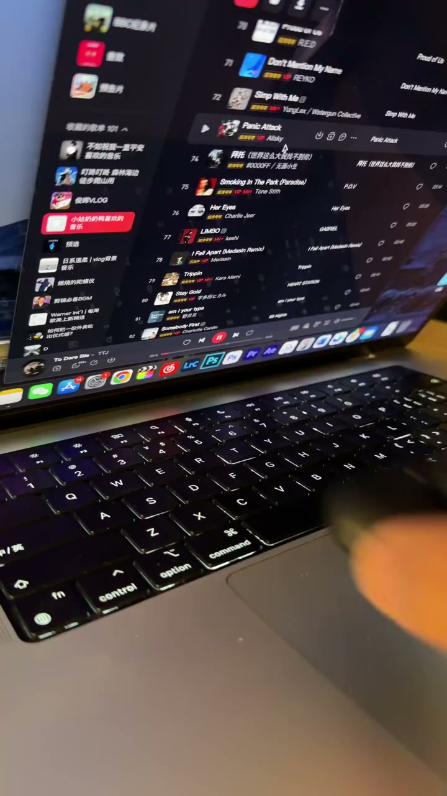

01
中文
高级感不来自昂贵的设备，而来自你选择的视角。
EN
A premium feel doesn't come from expensive gear—it comes from the angle you choose.
表达提示premium feel（高级感）

Scene English · 拍摄 · 视角升维
Shoot Videos That Look Simple Yet Premium
🎧 语音讲解
Premium Feel Comes from the Angle
情境同样的场景，不同的拍摄方式带来截然不同的质感；高级感不来自设备，来自视角。
高级感不来自昂贵的设备，而来自你选择的视角。
A premium feel doesn't come from expensive gear—it comes from the angle you choose.
表达提示premium feel（高级感）
普通人拍视频最常见的陷阱，是站在自己身高位置平拍。
The most common trap is shooting flat from your own standing height.
表达提示standing height（身高位置）
人眼默认视角，因此也是最平淡无奇的视角。
It's the default human view—and therefore the most boring one.
表达提示the default view（默认视角）
当你蹲下来、举高、移动起来，同样的场景瞬间产生了新鲜感。
Crouch, raise, or move, and the same scene instantly feels fresh.
表达提示a fresh feel（新鲜感）
premium feel（高级感
standing height（身高位置

Non-Everyday Angles
情境高级感的本质是非日常视角：观众每天看到平视世界，给他任何不同的视觉体验就觉得高级。
高级感的本质是非日常视角。
The essence of the premium look is a non-everyday angle.
表达提示non-everyday angle（非日常视角）
观众每天看到的世界都是平视的。
Viewers see a level-view world every day.
表达提示level view（平视）
你给他任何一个不同的视觉体验，他就觉得高级了。
Give them any different visual experience and it feels premium.
表达提示a different view（不同体验）
下一条视频的每一个镜头，必须有一个明确的角度：低角度、鸟瞰、快速推进、透过前景拍。
Every shot of your next video needs a clear angle: low, bird's-eye, fast push-in, or through a foreground.
表达提示through a foreground（透过前景）
non-everyday angle（非日常视角
level view（平视

The Power of Demonstration
情境极短教学的最大信息密度是示范而非解说：我给你看区别有多大。
这个视频只用画面对比传达信息，几乎不需要语言解释。
This video teaches purely through visual contrast, with almost no narration.
表达提示visual contrast（画面对比）
演示的力量远超解释。
Demonstration outweighs explanation.
表达提示demonstration（演示）
最有力的教学不是告诉你怎么做，而是给你看区别有多大。
The most powerful lesson isn't telling you how—it's showing the difference.
表达提示show the difference（展示差距）
visual contrast（画面对比
demonstration（演示

What You Can Do Right Now
情境用手机拍同一场景的多个角度，对比叙事感差异；每个镜头不站在身高位置拍。
用手机拍同一个场景的几种角度：平视、低角度、高角度、穿过前景。
Shoot one scene at several angles: level, low, high, and through a foreground.
表达提示several angles（多个角度）
对比四段画面，感受不同视角带来的叙事感差异。
Compare the clips and feel how angles change the story.
表达提示narrative difference（叙事差异）
下一次拍视频时，强制自己每个镜头都不站在自己的身高位置拍。
Next shoot, force yourself never to film from your standing height.
表达提示never at standing height（不站身高位置）
不是每个镜头都需要极端角度，关键是从默认视角中走出来，哪怕只是一点点。
Not every shot needs extremes—just step out of the default view, even a little.
表达提示step out of the default（走出默认视角）
several angles（多个角度

Where This Applies
情境适用于产品展示、旅行记录、生活碎片；固定机位的课程录制等需要一致性。
适用于产品展示、旅行记录、生活碎片。
It fits product showcases, travel records, and life fragments.
表达提示product showcase（产品展示）
高级画面和普通画面的差距，往往只差一个不站在身高位置的拍摄。
Premium and plain frames often differ by just one angle off your standing height.
表达提示one angle difference（只差一个角度）
固定内容的标准化录制，如课程视频的固定机位，需要画面一致性。
Standardized fixed-camera recordings, like course videos, need consistency.
表达提示fixed-camera courses（固定机位课程）
product showcase（产品展示
说高级感来源
说默认视角陷阱
说非日常视角
说演示的力量
说立刻行动
高级感与设备无关。
别站身高位置拍。
一点点偏移就够。
示范胜过解释。
简单偏移即高级。